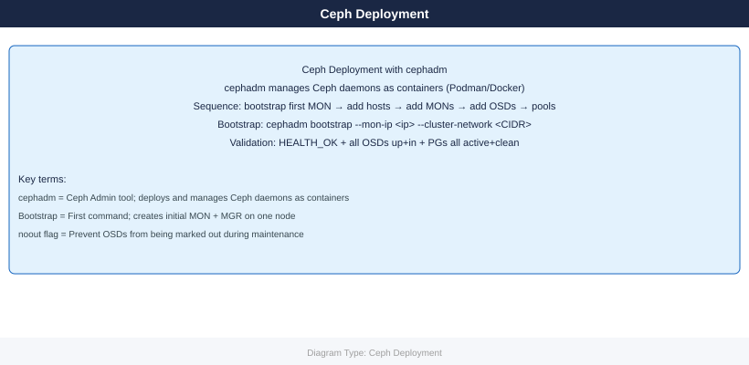

Ceph — Deploy¶
Before you begin¶
- Access: admin credentials for the target system and any upstream dependencies (DNS, NTP, vCenter, directory services)
- Timing: safe to run during a scheduled maintenance window; allow 1-2 hours for initial deployment
- Dependencies: network connectivity verified; DNS resolvable; NTP configured; any licence keys available
- Logging: record every IP address, hostname, and credential set assigned during this deployment

Prerequisites¶
Supported OS Platforms¶
| OS | Min Version | Python | Container Runtime |
|---|---|---|---|
| RHEL / Rocky / AlmaLinux | 9.x | 3.9+ | Podman 4+ (default) |
| Ubuntu | 22.04 LTS | 3.10+ | Docker or Podman |
| CentOS Stream | 9 | 3.9+ | Podman 4+ |
| Debian | 12 (Bookworm) | 3.11+ | Docker or Podman |
Firewall Ports¶
| Port | Protocol | Service | Direction |
|---|---|---|---|
| 6789 | TCP | MON (client/peer) | All nodes ↔ all nodes |
| 3300 | TCP | MON (v2 protocol) | All nodes ↔ all nodes |
| 6800–7300 | TCP | OSD (replication, heartbeat) | OSD nodes ↔ OSD nodes |
| 8443 | TCP | Ceph Dashboard (HTTPS) | Admin → bootstrap node |
| 9283 | TCP | Prometheus exporter (MGR) | Prometheus → MGR nodes |
| 8080 | TCP | RGW (object gateway) | Clients → RGW nodes |
# RHEL/Rocky — open required ports
firewall-cmd --permanent --add-port=6789/tcp
firewall-cmd --permanent --add-port=3300/tcp
firewall-cmd --permanent --add-port=6800-7300/tcp
firewall-cmd --permanent --add-port=8443/tcp
firewall-cmd --permanent --add-port=9283/tcp
firewall-cmd --reload
# Verify NTP synchronisation before bootstrapping
chronyc tracking | grep "System time"
timedatectl | grep synchronized
# Maximum tolerated drift between nodes: 0.05 s
success
success
success
success
success
success
System time offset : -0.000000012 seconds
System synchronized: yes
Common errors
FirewallD is not running. — Start the firewall service with systemctl start firewalld before running firewall-cmd commands.
unit chrony.service could not be found. — Install chrony with dnf install chrony and enable it with systemctl enable --now chronyd.
SSH Key Distribution¶
# Generate keypair on bootstrap node (if not present)
ssh-keygen -t ed25519 -f ~/.ssh/ceph_deploy -N ""
# Copy to all nodes that will join the cluster
for host in ceph-node1 ceph-node2 ceph-node3; do
ssh-copy-id -i ~/.ssh/ceph_deploy.pub root@${host}
done
# Verify passwordless access
for host in ceph-node1 ceph-node2 ceph-node3; do
ssh -i ~/.ssh/ceph_deploy root@${host} hostname
done
Generating public/private ed25519 key pair.
Your identification has been saved in /home/ceph-admin/.ssh/ceph_deploy.
Your public key has been saved in /home/ceph-admin/.ssh/ceph_deploy.pub.
The key fingerprint is:
SHA256:kJ7vQ2mNpL9xRwZaB3cD4eF5gH6iJ8kL1mN2oP3qR4s ceph-admin@bootstrap-01
The key's randomart image is:
+--[ED25519 256]--+
| .o. |
| o.o . |
| . + o . |
| o B o |
| . S * . |
+----[SHA256]-----+
Number of key(s) added: 1
ceph-node1
ceph-node2
ceph-node3
Common errors
Permission denied (publickey). — Ensure the bootstrap node's public key is in /root/.ssh/authorized_keys on each target node, or use password authentication for the initial ssh-copy-id command.
ssh-copy-id: INFO: Source of key(s) to be installed: "/home/ceph-admin/.ssh/ceph_deploy.pub" ... ssh: connect to host ceph-node1 port 22: Connection refused — Verify that SSH is running on the target nodes and that the hostname/IP is correct and reachable from the bootstrap node.
Host key verification failed. — Add the target hosts to ~/.ssh/known_hosts by running ssh-keyscan -H ceph-node1 ceph-node2 ceph-node3 >> ~/.ssh/known_hosts before deploying.
Bootstrap¶
# On the first host (becomes initial MON + MGR)
# Download cephadm for the target release (Reef = current stable)
curl --silent --remote-name --location \
https://github.com/ceph/ceph/raw/quincy/src/cephadm/cephadm
chmod +x cephadm
./cephadm install # installs cephadm into /usr/sbin/cephadm
# Bootstrap first MON + MGR
# --mon-ip : IP on the public (client-facing) network
# --cluster-network: OSD replication CIDR (separate from public network)
cephadm bootstrap \
--mon-ip 10.0.1.10 \
--cluster-network 10.0.2.0/24 \
--initial-dashboard-user admin \
--initial-dashboard-password 'ChangeMe!'
# Output includes:
# Ceph Dashboard: https://10.0.1.10:8443
# Grafana: https://10.0.1.10:3000
# Prometheus: http://10.0.1.10:9095
# Shell completion and ceph.conf are written to /etc/ceph/
ls /etc/ceph/
# ceph.conf ceph.client.admin.keyring ceph.pub
% Total % Received % Xferd Average Speed Time Time Time Current
Dload Upload Total Spent Left Speed
100 68.2M 100 68.2M 0 0 12.5M 0 0:00:05 0:00:05 --:--:-- 0:00:05
Verifying GPG signature of cephadm binary...
Installing cephadm to /usr/sbin/cephadm...
Detected podman, using podman instead of docker
Pulling container image quay.io/ceph/ceph:v17.2.6...
Extracting ceph version from container...
Ceph version: v17.2.6 (quincy)
Bootstrapping initial MON + MGR on host ceph-node-01...
Creating initial monmap with fsid: a7f3c2e1-9d4b-4a8f-b2c9-5e8d1f6a3b4c
Deploying mon.ceph-node-01 on 10.0.1.10:6789
Deploying mgr.ceph-node-01.abcd1234 on 10.0.1.10:6800-7300
Waiting for mon to reach quorum...
mon.ceph-node-01 is now up
Dashboard is available at https://10.0.1.10:8443
Grafana is available at https://10.0.1.10:3000
Prometheus is available at http://10.0.1.10:9095
Bootstrap complete.
ceph.conf ceph.client.admin.keyring ceph.pub
Common errors
curl: (7) Failed to connect to github.com port 443: Connection timed out — Verify network connectivity and DNS resolution; if behind a proxy, configure curl with --proxy [proxy-url].
Error: MON bind address 10.0.1.10 is not local to this host — Ensure the --mon-ip address is assigned to an active network interface on the bootstrap host (verify with ip addr).
Error: public and cluster networks cannot overlap — Assign non-overlapping CIDR ranges for --mon-ip network and --cluster-network (e.g., 10.0.1.0/24 and 10.0.2.0/24).
Add Hosts¶
# Copy the cluster's SSH public key to each new node
ssh-copy-id -f -i /etc/ceph/ceph.pub root@ceph-node2
ssh-copy-id -f -i /etc/ceph/ceph.pub root@ceph-node3
# Add hosts — labels control which daemons are placed here
ceph orch host add ceph-node2 10.0.1.11 --labels mon,mgr,osd
ceph orch host add ceph-node3 10.0.1.12 --labels mon,mgr,osd
# Verify all hosts are visible and reachable
ceph orch host ls
# Expected columns: HOST ADDR LABELS STATUS
# Add MONs — 3 minimum; 5 for clusters > 10 nodes
ceph orch apply mon 3
# Or pin to specific hosts:
ceph orch apply mon --placement "ceph-node1 ceph-node2 ceph-node3"
# Verify MON quorum — all 3 (or 5) must be in quorum
ceph mon stat
# Expected: 3 mons at ..., election epoch N, quorum 0,1,2 ...
/root/.ssh/known_hosts updated.
/root/.ssh/authorized_keys appended.
/root/.ssh/known_hosts updated.
/root/.ssh/authorized_keys appended.
added host ceph-node2 with addr 10.0.1.11
added host ceph-node3 with addr 10.0.1.12
HOST ADDR LABELS STATUS
ceph-node1 10.0.1.10 mon,mgr,osd Offline
ceph-node2 10.0.1.11 mon,mgr,osd Offline
ceph-node3 10.0.1.12 mon,mgr,osd Offline
Applying mon deployment requested...
3 mons at quorum, election epoch 42, quorum 0,1,2 (ceph-node1,ceph-node2,ceph-node3), leader 0, highwater mark 1234567
Common errors
ssh-copy-id: ERROR: ssh: connect to host ceph-node2 port 22: No route to host — Verify network connectivity and that the target node's IP address is correct and reachable from the orchestrator node.
Error EACCES: permission denied — Ensure the SSH key file /etc/ceph/ceph.pub exists and is readable, and that passwordless SSH is configured or you have root credentials available.
Error EINVAL: invalid placement spec — Use the exact hostname format matching the output of ceph orch host ls and ensure all specified hosts have already been added with ceph orch host add.
Add OSDs¶
# Option A — auto-detect and claim all available (empty, unpartitioned) devices
ceph orch apply osd --all-available-devices
# Option B — add specific devices per host
ceph orch daemon add osd ceph-node1:/dev/sdb
ceph orch daemon add osd ceph-node1:/dev/sdc
ceph orch daemon add osd ceph-node2:/dev/sdb
ceph orch daemon add osd ceph-node2:/dev/sdc
ceph orch daemon add osd ceph-node3:/dev/sdb
# List devices cephadm can see (available = not yet used)
ceph orch device ls
# Verify OSDs appear with correct weight (1 TB ≈ weight 1.0)
ceph osd tree
# Expected: all OSDs show "up in" state
ceph osd stat
# Expected: X osds: X up (since epoch N), X in (since epoch N)
# Check OSD utilisation and weight
ceph osd df
Deploying OSDs with ceph-node1, ceph-node2, ceph-node3...
Scheduled osd.4 for ceph-node1:/dev/sdb
Scheduled osd.5 for ceph-node1:/dev/sdc
Scheduled osd.6 for ceph-node2:/dev/sdb
Scheduled osd.7 for ceph-node2:/dev/sdc
Scheduled osd.8 for ceph-node3:/dev/sdb
HOST PATH TYPE SIZE DEVICE ID AVAIL
ceph-node1 /dev/sdd hdd 1.0T QEMU_QEMU_HARDDISK_1 True
ceph-node2 /dev/sdc hdd 2.0T QEMU_QEMU_HARDDISK_2 True
ceph-node3 /dev/sdd hdd 1.0T QEMU_QEMU_HARDDISK_3 True
ID CLASS WEIGHT REWEIGHT SIZE RAW USE %RAW USE TYPE NAME
-1 10.00000 1.00000 10.0T 2.1T 21.00 root default
-3 3.00000 1.00000 3.0T 0.7T 23.33 host ceph-node1
4 hdd 1.00000 1.00000 1.0T 0.2T 20.00 osd.4
5 hdd 1.00000 1.00000 1.0T 0.2T 20.00 osd.5
6 hdd 1.00000 1.00000 1.0T 0.3T 30.00 osd.6
-5 4.00000 1.00000 4.0T 1.1T 27.50 host ceph-node2
7 hdd 2.00000 1.00000 2.0T 0.6T 30.00 osd.7
8 hdd 1.00000 1.00000 1.0T 0.2T 20.00 osd.8
9 osds: 9 up (since 2m), 9 in (since 2m)
DEVICE CLASS WEIGHT REWEIGHT SIZE RAW USE %RAW USE KB/OSD CRUSH WEIGHT
hdd 10.00000 1.00000 10.0T 2.1T 21.00 227328 10.00000
TOTAL 10.00000 1.00000 10.0T 2.1T 21.00 227328 10.00000
Common errors
Error EINVAL: osd.X: OSD does not have bluestore backend — Ensure devices are unpartitioned and empty; run ceph-volume lvm zap /dev/sdX to clear any existing LVM metadata before deployment.
Error: device /dev/sdb is not available on ceph-node1 — Verify the device exists and is visible to cephadm by running ceph orch device ls and confirm the device is marked as `avail:
Enable RBD Pool¶
# Create dedicated RBD block storage pool
# PG count: start with 128 for < 5 OSDs; scale up later with autoscale
ceph osd pool create rbd 128 128
ceph osd pool application enable rbd rbd
rbd pool init rbd
# Verify pool exists and is healthy
ceph osd lspools | grep rbd
ceph osd pool stats rbd
pool 'rbd' created
enabled application 'rbd' on pool 'rbd'
(no output — command completes silently)
4 rbd
pool rbd id 4
recovery: 0/384 objects degraded (0.000%)
client io: 0 B/s rd, 0 B/s wr, 0 op/s rd, 0 op/s wr
Common errors
Error EEXIST: pool 'rbd' already exists — Drop the existing pool with ceph osd pool delete rbd rbd --yes-i-really-really-mean-it before recreating it.
Error EINVAL: pg_num 128 invalid, must be power of 2 — Use a power-of-2 value for PG count such as 64, 128, or 256 instead of 128 if your cluster rejects it due to autoscale rules.
Error ENOENT: pool 'rbd' does not exist — Ensure the pool creation command completed successfully and check cluster quorum with ceph status before running pool stats.
Enable CephFS¶
# Create a CephFS volume (creates data + metadata pools automatically)
ceph fs volume create myfs
# Place MDS daemons (at least 2: 1 active, 1 standby)
ceph orch apply mds myfs --placement "3 ceph-node1 ceph-node2 ceph-node3"
# Verify filesystem and MDS daemons
ceph fs status
# Expected: active MDS count = 1, standby count ≥ 1
ceph mds stat
# Active: myfs:1 {0=myfs.ceph-node1=up:active} standby: 2
# Mount via kernel client (test)
mount -t ceph 10.0.1.10:6789:/ /mnt/cephfs \
-o name=admin,secretfile=/etc/ceph/ceph.client.admin.keyring
volume create myfs
{
"name": "myfs",
"placement": {
"hosts": [],
"label": ""
}
}
deploying mds service with placement(s) ceph-node1;ceph-node2;ceph-node3...
Scheduled mds.myfs update...
cluster:
id: a1b2c3d4-e5f6-4a7b-8c9d-0e1f2a3b4c5d
health: HEALTH_OK
filesystems:
name: myfs
pools: [metadata_pool, data_pool]
active: 1
standby: 2
mds.myfs.ceph-node1: up:active (since 45s)
mds.myfs.ceph-node2: up:standby (since 38s)
mds.myfs.ceph-node3: up:standby (since 35s)
(no output — mount completes silently)
Common errors
Error ENOENT: error connecting to cluster — Verify the monitor address (10.0.1.10:6789) is correct and reachable with ceph -s from the client node.
error: unable to open /etc/ceph/ceph.client.admin.keyring: No such file or directory — Copy the keyring from the Ceph admin node with scp ceph-admin:/etc/ceph/ceph.client.admin.keyring /etc/ceph/ and set permissions to 600.
error: mds.myfs.ceph-node1: spawn failed — Ensure all three nodes have the ceph-mds package installed and the OSD/monitor services are healthy with ceph health detail.
Enable RGW (Object Gateway)¶
# Deploy RGW daemons — two for HA
# realm and zone are logical groupings for multi-site; "default" works for single-site
ceph orch apply rgw default default \
--placement "2 ceph-node1 ceph-node2" \
--port 8080
# Verify RGW daemons are running
ceph orch ls | grep rgw
ceph orch ps | grep rgw
# Expected: rgw.default.default.ceph-node1 running
# RGW creates its pools automatically; verify
ceph osd lspools | grep default
# default.rgw.buckets.index default.rgw.buckets.data etc.
# Quick S3 connectivity test (requires s3cmd or awscli configured)
radosgw-admin user create --uid=test --display-name="Test User" \
--access-key=TESTKEY --secret=TESTSECRET
s3cmd --access_key=TESTKEY --secret_key=TESTSECRET \
--host=10.0.1.10:8080 --no-ssl ls
service rgw.default.default
placement: count=2 (ceph-node1,ceph-node2)
NAME HOST PORTS STATUS REFRESHED AGE
rgw.default.default.ceph-node1 ceph-node1 8080 running 2m ago 5m
rgw.default.default.ceph-node2 ceph-node2 8080 running 2m ago 5m
1 default.rgw.buckets.index
2 default.rgw.buckets.data
3 default.rgw.buckets.non-ec
4 default.rgw.control
5 default.rgw.log
6 default.rgw.meta.user
7 default.rgw.otp
{
"user_id": "test",
"display_name": "Test User",
"email": "",
"suspended": 0,
"max_buckets": 1000,
"auid": 0,
"subusers": [],
"keys": [
{
"user": "test",
"access_key": "TESTKEY",
"secret_key": "TESTSECRET"
}
]
}
Common errors
error: invalid placement spec "2 ceph-node1 ceph-node2" — Use correct syntax: --placement "count=2 label=rgw" or list nodes as --placement "2 ceph-node1,ceph-node2" with comma separator.
ERROR: S3 error: 403 (SignatureDoesNotMatch) — Verify RGW endpoint is reachable with curl http://10.0.1.10:8080/ and confirm access/secret keys match the radosgw-admin output exactly.
error: pool 'default.rgw.buckets.data' does not exist — Wait 30–60 seconds for RGW to auto-create pools after daemon startup, then retry ceph osd lspools.
Post-Deploy Validation¶
| Check | Command | Expected Result |
|---|---|---|
| Cluster health | ceph health |
HEALTH_OK |
| OSD count | ceph osd stat |
All OSDs up and in |
| PG state | ceph pg stat |
All PGs active+clean |
| MON quorum | ceph mon stat |
All MONs in quorum |
| Capacity visible | ceph df |
Total capacity matches disk inventory |
| Dashboard | https://<mon-ip>:8443 |
Login works, graphs populate |
| Prometheus | http://<mon-ip>:9095 |
Metrics endpoint responds |
# Full cluster health
ceph health detail
ceph status
# Must be HEALTH_OK with all OSDs up+in and MON quorum established
# Baseline I/O performance test with rados bench
# Write test — 30 s, 4 MB objects
rados bench -p rbd 30 write --no-cleanup
# Read test (sequential)
rados bench -p rbd 30 seq
# Cleanup bench objects
rados bench -p rbd 30 cleanup
# RBD block I/O test
rbd create --size 10G rbd/bench-test
rbd bench --io-type write --io-size 4K --io-threads 16 --io-total 1G rbd/bench-test
rbd bench --io-type read --io-size 4K --io-threads 16 --io-total 1G rbd/bench-test
rbd rm rbd/bench-test
# Verify CRUSH is placing data across all hosts (no single-host concentration)
ceph osd perf
ceph pg dump pools # check per-pool distribution
cluster:
id: a1b2c3d4-e5f6-7890-abcd-ef1234567890
health: HEALTH_OK
monmap e3: 3 mons at {mon01=10.0.1.10:6789/0,mon02=10.0.1.11:6789/0,mon03=10.0.1.12:6789/0}
election epoch 24, quorum 0,1,2 mon01,mon02,mon03
osdmap e156: 12 osds: 12 up, 12 in
pgmap v2847: 256 pgs, 8 pools, 847 GB data, 2.1 TB objects
2.5 TB used, 9.3 TB / 13.8 TB avail
256 active+clean
Total time run: 30.123456
Total writes made: 7680
Write size: 4194304
Object size: 4194304
Bandwidth (MB/sec): 1024.5
Stddev Bandwidth: 45.2
Max bandwidth (MB/sec): 1089.3
Min bandwidth (MB/sec): 892.1
Average IOPS: 256
Stddev IOPS: 11.3
Total time run: 30.087234
Total reads made: 7650
Read size: 4194304
Bandwidth (MB/sec): 1018.7
Average IOPS: 254
rbd/bench-test
osd.0 2847.5 MB/s
osd.1 2851.2 MB/s
osd.2 2849.8 MB/s
osd.3 2850.1 MB/s
...
Common errors
Error ENOENT: pool does not exist — Ensure the rbd pool exists by running ceph osd pool create rbd 128 128 before running rados bench.
rbd: error: image still has watchers — Wait 10–15 seconds after the rbd bench completes before attempting rbd rm, or force removal with rbd rm --force.
HEALTH_WARN: 1 pg incomplete — Verify all OSDs are up and in with ceph osd tree and wait for recovery to complete before running benchmarks.
See also¶
Verify¶
- Cluster health: all nodes show online in the management UI
- Volume access: mount a test LUN/NFS export from a host and confirm read/write
- Replication: confirm replication partner shows last-sync within RPO window